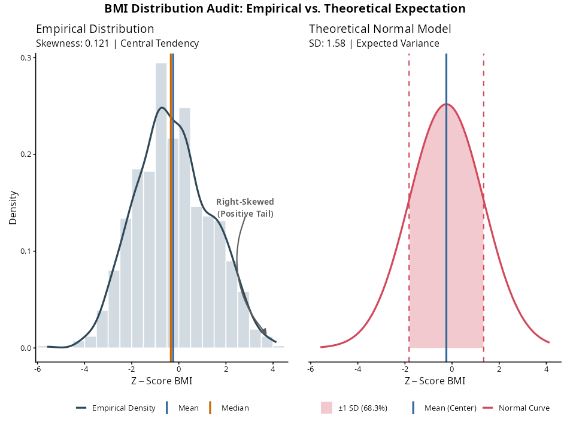
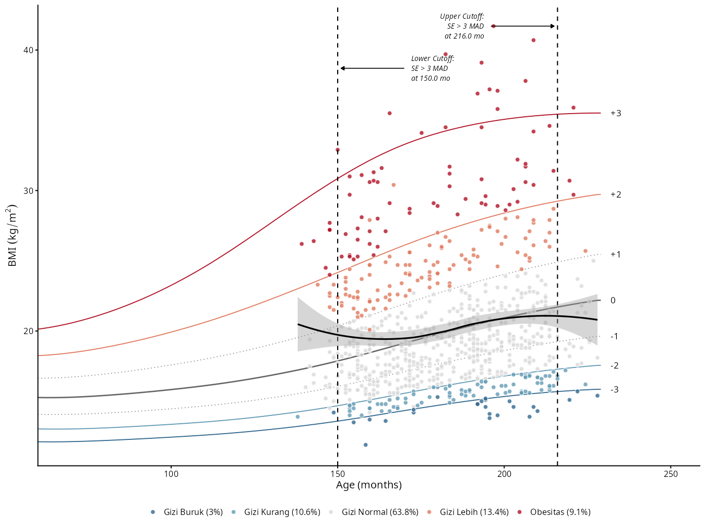
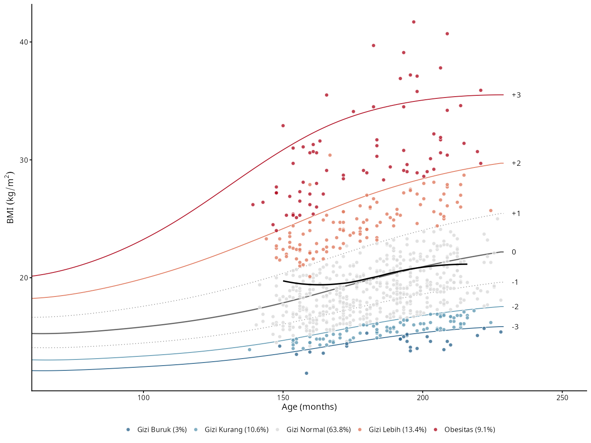
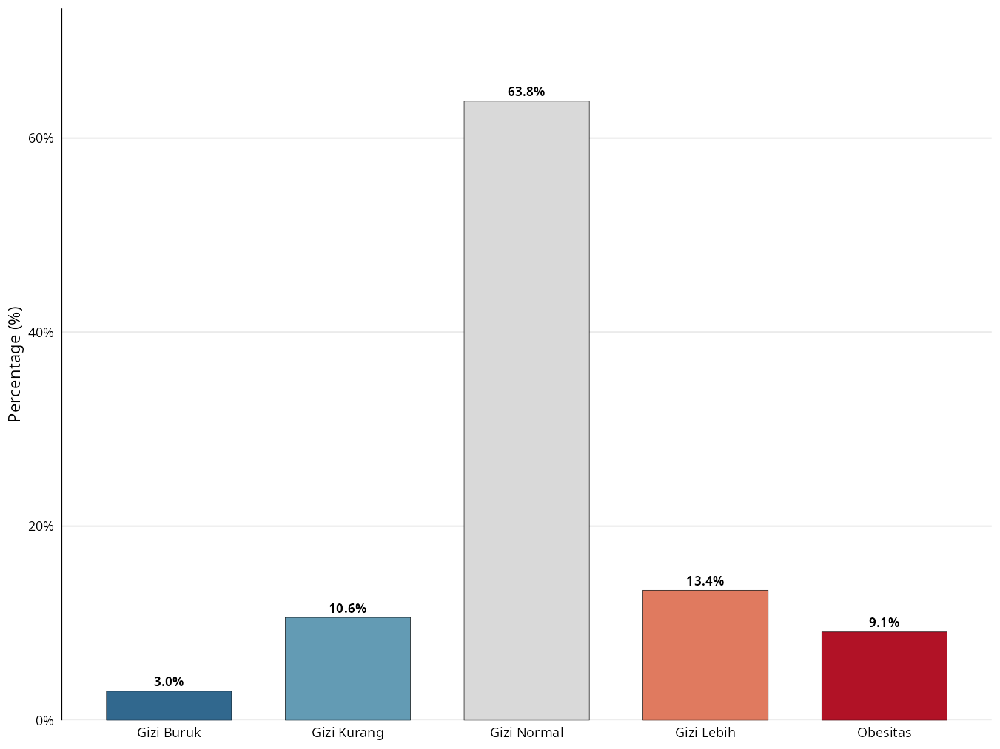

library(readxl)
library(writexl)
library(ggplot2)
library(dplyr)
library(ggExtra)
library(anthroplus)
library(scales)
library(knitr)
library(officer)
library(flextable)
library(janitor)
# source('fungsi/bmi_calc.R')
source('fungsi/bmi_calc2.R')
source('fungsi/summary.R')VISUAL
male_data <- read_excel("raw_data/male_data.xlsx")
male_data# A tibble: 827 × 8 ks tl umur sex tb bb bf bmi <chr> <dttm> <dbl> <chr> <dbl> <dbl> <dbl> <dbl> 1 SM71 2013-06-24 00:00:00 12.3 M 143 39.5 13.4 19.3 2 SM72 2012-10-01 00:00:00 13 M 148. 37.5 11.1 17.2 3 SM73 2012-12-22 00:00:00 12.8 M 158 41.8 8.1 16.7 4 SM74 2013-02-14 00:00:00 12.6 M 160 64.7 22 25.3 5 SM75 2013-04-30 00:00:00 12.4 M 145 45.3 0 21.5 6 SM76 2012-10-28 00:00:00 12.9 M 166. 69.5 27.8 25.1 7 SM77 2012-10-10 00:00:00 12.9 M 148 42.3 11.4 19.3 8 SM78 2013-03-27 00:00:00 12.5 M 156. 44.4 12.2 18.4 9 SM79 2013-02-02 00:00:00 12.7 M 148. 51.2 23.4 23.5 10 SM710 2012-05-20 00:00:00 13.3 M 160. 47.5 11.1 18.7 # ℹ 817 more rows # ℹ Use `print(n = ...)` to see more rows
# menghitung z-scores dan kategori
male_results <- calculate_bmi_zscores(male_data, target_sex=1)male_results# A tibble: 827 × 18 ks tl umur sex tb bb bf bmi_empiris umur_bulan bmi_who bmi_z_manual bmi_z_interp bmi_z_package <chr> <dttm> <dbl> <chr> <dbl> <dbl> <dbl> <dbl> <dbl> <dbl> <dbl> <dbl> <dbl> 1 SM71 2013-06-24 00:00:00 12.3 M 143 39.5 13.4 19.3 148. 19.3 0.672 0.682 0.68 2 SM72 2012-10-01 00:00:00 13 M 148. 37.5 11.1 17.2 156 17.2 -0.496 -0.496 -0.5 3 SM73 2012-12-22 00:00:00 12.8 M 158 41.8 8.1 16.7 154. 16.7 -0.709 -0.697 -0.7 4 SM74 2013-02-14 00:00:00 12.6 M 160 64.7 22 25.3 151. 25.3 2.20 2.19 2.19 5 SM75 2013-04-30 00:00:00 12.4 M 145 45.3 0 21.5 149. 21.5 1.38 1.39 1.39 6 SM76 2012-10-28 00:00:00 12.9 M 166. 69.5 27.8 25.1 155. 25.1 2.08 2.09 2.09 7 SM77 2012-10-10 00:00:00 12.9 M 148 42.3 11.4 19.3 155. 19.3 0.487 0.492 0.49 8 SM78 2013-03-27 00:00:00 12.5 M 156. 44.4 12.2 18.4 150 18.4 0.226 0.226 0.23 9 SM79 2013-02-02 00:00:00 12.7 M 148. 51.2 23.4 23.5 152. 23.5 1.82 1.81 1.81 10 SM710 2012-05-20 00:00:00 13.3 M 160. 47.5 11.1 18.7 160. 18.7 0.0823 0.0937 0.09 # ℹ 817 more rows # ℹ 5 more variables: diff_manual_pkg <dbl>, diff_interp_pkg <dbl>, cat_manual <ord>, cat_interp <ord>, cat_package <ord> # ℹ Use `print(n = ...)` to see more rows
summarize_categorical(male_results, "cat_package")# A tibble: 7 × 3 Category Freq Percentage <chr> <int> <dbl> 1 Gizi Buruk 25 3 2 Gizi Kurang 87 10.5 3 Gizi Normal 524 63.4 4 Gizi Lebih 110 13.3 5 Obesitas 75 9.1 6 NA 6 0.7 7 Total 827 100
summarize_categorical(male_results, "cat_package")# A tibble: 7 × 5 Category Jumlah Percentage Kategori Persentase <chr> <int> <dbl> <chr> <dbl> 1 Gizi Buruk 25 3 NA NA 2 Gizi Kurang 87 10.5 NA NA 3 Gizi Normal 524 63.4 NA NA 4 Gizi Lebih 110 13.3 NA NA 5 Obesitas 75 9.1 NA NA 6 NA 6 0.7 NA NA 7 NA 827 NA Total 100
summarize_continuous(male_results, "bmi_z_package")# A tibble: 5 × 2 Statistic Value <chr> <chr> 1 N 821 2 Mean ± SD -0.242 ± 1.583 3 Median (IQR) -0.340 (-1.340, 0.850) 4 Minimum -5.59 5 Maximum 4.14
plot_bmi_comprehensive <- function(df, bmi_col) {
if (!requireNamespace("patchwork", quietly = TRUE)) install.packages("patchwork")
if (!requireNamespace("e1071", quietly = TRUE)) install.packages("e1071")
library(ggplot2)
library(patchwork)
library(e1071)
# ==========================================
# 1. Statistik & Preparasi Data
# ==========================================
x <- df[[bmi_col]][!is.na(df[[bmi_col]])]
m_mean <- mean(x)
m_median <- median(x)
m_sd <- sd(x)
m_skew <- skewness(x)
x_min <- min(x)
x_max <- max(x)
# Densitas untuk Kurva Normal
x_range <- seq(x_min, x_max, length.out = 500)
y_norm <- dnorm(x_range, mean = m_mean, sd = m_sd)
df_norm <- data.frame(x = x_range, y = y_norm)
shade_sd <- subset(df_norm, x >= (m_mean - m_sd) & x <= (m_mean + m_sd))
# Sinkronisasi sumbu Y
dens <- density(x)
y_max <- max(max(dens$y), max(y_norm)) * 1.15
# ==========================================
# 2. LOGIKA ANOTASI SKEWNESS OTOMATIS (ENGLISH)
# ==========================================
is_right_skew <- m_skew > 0
skew_label <- ifelse(is_right_skew,
"Right-Skewed\n(Positive Tail)",
"Left-Skewed\n(Negative Tail)")
# Penempatan teks (30% dari ujung ekor)
text_x <- ifelse(is_right_skew,
x_max - (x_max - m_mean) * 0.3,
x_min + (m_mean - x_min) * 0.3)
text_y <- y_max * 0.5 # Tinggi teks
# Ujung panah menunjuk ke 10% area paling ekstrem
arrow_x <- ifelse(is_right_skew,
x_max - (x_max - m_mean) * 0.1,
x_min + (m_mean - x_min) * 0.1)
arrow_y <- y_max * 0.05
# ==========================================
# 3. PLOT KIRI: Empiris
# ==========================================
p1 <- ggplot(df, aes(x = .data[[bmi_col]])) +
geom_histogram(
aes(y = after_stat(density)),
binwidth = 0.5, boundary = 0, fill = "#A8B8C6", color = "white", alpha = 0.5, na.rm = TRUE
) +
geom_density(aes(color = "Empirical Density"), linewidth = 1.2, key_glyph = "path", na.rm = TRUE) +
geom_vline(aes(xintercept = m_mean, color = "Mean"), linewidth = 1.2, linetype = "solid") +
geom_vline(aes(xintercept = m_median, color = "Median"), linewidth = 1.2, linetype = "solid") +
# Anotasi Teks Otomatis
annotate(
"text", x = text_x, y = text_y, label = skew_label,
color = "#5c5c5c", fontface = "bold", size = 4
) +
# Panah Dinamis
annotate(
"curve", x = text_x, y = text_y - (y_max * 0.03), xend = arrow_x, yend = arrow_y,
curvature = ifelse(is_right_skew, 0.3, -0.3),
arrow = arrow(length = unit(0.25, "cm"), type = "closed"),
color = "#5c5c5c", linewidth = 0.8
) +
scale_color_manual(values = c("Empirical Density" = "#2F4858", "Mean" = "#336699", "Median" = "#CC6600")) +
coord_cartesian(xlim = c(x_min, x_max), ylim = c(0, y_max)) +
labs(
title = "Empirical Distribution",
subtitle = sprintf("Skewness: %.3f | Central Tendency", m_skew),
x = expression(Z-Score~BMI), y = "Density"
) +
theme_classic(base_size = 13) +
theme(legend.position = "bottom", legend.title = element_blank())
# ==========================================
# 4. PLOT KANAN: Normal Teoretis
# ==========================================
p2 <- ggplot(df_norm, aes(x = x, y = y)) +
geom_area(data = shade_sd, aes(x = x, y = y, fill = "±1 SD (68.3%)"), alpha = 0.3) +
geom_line(aes(color = "Normal Curve"), linewidth = 1.2) +
geom_vline(xintercept = c(m_mean - m_sd, m_mean + m_sd), color = "#D1495B", linetype = "dashed", linewidth = 0.8) +
geom_vline(aes(xintercept = m_mean, color = "Mean (Center)"), linewidth = 1.2) +
scale_color_manual(values = c("Normal Curve" = "#D1495B", "Mean (Center)" = "#336699")) +
scale_fill_manual(values = c("±1 SD (68.3%)" = "#D1495B")) +
coord_cartesian(xlim = c(x_min, x_max), ylim = c(0, y_max)) +
labs(
title = "Theoretical Normal Model",
subtitle = sprintf("SD: %.2f | Expected Variance", m_sd),
x = expression(Z-Score~BMI), y = ""
) +
theme_classic(base_size = 13) +
theme(
legend.position = "bottom",
legend.title = element_blank(),
axis.text.y = element_blank(),
axis.ticks.y = element_blank(),
axis.line.y = element_blank()
)
# ==========================================
# 5. PENGGABUNGAN
# ==========================================
final_plot <- p1 + p2 +
plot_annotation(
title = "BMI Distribution Audit: Empirical vs. Theoretical Expectation",
theme = theme(plot.title = element_text(face = "bold", hjust = 0.5, size = 16))
)
return(final_plot)
}male_bmi_density <- plot_bmi_comprehensive(df=male_results, bmi_col = "bmi_z_package")
male_bmi_density
ggsave("plot/male_density_curve.png", male_bmi_density, width = 10, height = 8, units = "in", dpi=1200)generate_who_charts <- function(data,
category_col,
bmi_col = "bmi_empiris",
age_col = "umur_bulan",
target_sex = 1) {
# =====================================================================
# 1. PENYIAPAN DATA & STANDARISASI KOLOM
# =====================================================================
plot_df <- data %>%
rename(
val_bmi = all_of(bmi_col),
val_age = all_of(age_col)
) %>%
filter(!is.na(val_bmi), !is.na(val_age), !is.na(.data[[category_col]]))
who_lms <- anthroplus:::bfa_growth_standards %>%
filter(sex == target_sex) %>% arrange(age)
who_curves <- who_lms %>%
mutate(
z_m3 = m * (1 + l*s*(-3))^(1/l), z_m2 = m * (1 + l*s*(-2))^(1/l),
z_m1 = m * (1 + l*s*(-1))^(1/l), z_0 = m,
z_p1 = m * (1 + l*s*(1))^(1/l), z_p2 = m * (1 + l*s*(2))^(1/l),
z_p3 = m * (1 + l*s*(3))^(1/l)
)
min_bound <- floor(min(c(plot_df$val_bmi, who_curves$z_m3), na.rm = TRUE)) - 2
max_bound <- ceiling(max(c(plot_df$val_bmi, who_curves$z_p3), na.rm = TRUE)) + 2
zone_df <- who_curves %>%
transmute(
age, zm3 = z_m3, zm2 = z_m2, zp1 = z_p1, zp2 = z_p2,
ymin = min_bound, ymax = max_bound
)
status_levels <- c("Gizi Buruk", "Gizi Kurang", "Gizi Normal", "Gizi Lebih", "Obesitas")
cat_table <- plot_df %>%
mutate(!!sym(category_col) := factor(.data[[category_col]], levels = status_levels)) %>%
group_by(.data[[category_col]]) %>%
summarise(n = n(), .groups = "drop") %>%
arrange(.data[[category_col]]) %>%
mutate(pct = round(100 * n / sum(n), 1))
legend_labels <- setNames(
paste0(cat_table[[category_col]], " (", cat_table$pct, "%)"),
cat_table[[category_col]]
)
label_df <- data.frame(
age = max(who_curves$age) + 3,
val_bmi = c(
dplyr::last(who_curves$z_m3), dplyr::last(who_curves$z_m2), dplyr::last(who_curves$z_m1),
dplyr::last(who_curves$z_0), dplyr::last(who_curves$z_p1), dplyr::last(who_curves$z_p2),
dplyr::last(who_curves$z_p3)
),
label = c("-3", "-2", "-1", "0", "+1", "+2", "+3")
)
who_curves_long <- who_curves %>%
pivot_longer(cols = starts_with("z_"), names_to = "curve", values_to = "value") %>%
mutate(curve = factor(curve, levels = c("z_m3", "z_m2", "z_m1", "z_0", "z_p1", "z_p2", "z_p3")))
# =====================================================================
# 2. MESIN DETEKSI EKSPLOSI SE MATEMATIS (TWO-TAILED)
# =====================================================================
loess_model <- loess(val_bmi ~ val_age, data = plot_df, span = 0.9,
control = loess.control(surface = "direct"))
age_seq <- sort(unique(plot_df$val_age))
loess_pred <- predict(loess_model, newdata = data.frame(val_age = age_seq), se = TRUE)
se_values <- loess_pred$se.fit
se_baseline <- median(se_values, na.rm = TRUE)
se_mad <- mad(se_values, na.rm = TRUE)
se_threshold <- se_baseline + (3 * se_mad)
mid_age <- median(age_seq, na.rm = TRUE)
# Deteksi ledakan di Sayap Kanan (Usia Tinggi)
upper_explosion <- age_seq[age_seq > mid_age & se_values > se_threshold]
dynamic_upper_cutoff <- if (length(upper_explosion) > 0) min(upper_explosion) else max(age_seq, na.rm = TRUE)
# Deteksi ledakan di Sayap Kiri (Usia Rendah)
lower_explosion <- age_seq[age_seq < mid_age & se_values > se_threshold]
# Kita ambil nilai *maximum* dari sayap kiri sebagai batas, karena itu adalah titik persis sebelum data stabil
dynamic_lower_cutoff <- if (length(lower_explosion) > 0) max(lower_explosion) else min(age_seq, na.rm = TRUE)
max_bmi <- max(plot_df$val_bmi, na.rm = TRUE)
min_bmi <- min(plot_df$val_bmi, na.rm = TRUE)
# =====================================================================
# 3. PENGATURAN PLOT
# =====================================================================
master_colors <- c(
"Gizi Buruk" = "#31688e", "Gizi Kurang" = "#639bb4", "Gizi Normal" = "#d9d9d9",
"Gizi Lebih" = "#e07a5f", "Obesitas" = "#b11226"
)
shared_layers <- list(
geom_point(data = plot_df, aes(val_age, val_bmi, fill = .data[[category_col]]), shape = 21, color = "white", alpha = 0.8, size = 2.8),
geom_text(data = label_df, aes(age, val_bmi, label = label), hjust = 0, size = 5),
scale_fill_manual(values = master_colors, labels = legend_labels),
coord_cartesian(xlim = c(min(who_curves$age), max(who_curves$age) + 15)),
scale_x_continuous(expand = expansion(mult = c(0, 0.08))),
theme_classic(base_size = 16),
theme(legend.position = "bottom", legend.title = element_blank()),
labs(subtitle = NULL, x = "Age (months)", y = expression(BMI~(kg/m^2)))
)
clean_colors <- c("z_m3"="#31688e", "z_m2"="#639bb4", "z_m1"="grey50", "z_0"="grey40", "z_p1"="grey50", "z_p2"="#e07a5f", "z_p3"="#b11226")
clean_lines <- c("z_m3"="solid", "z_m2"="solid", "z_m1"="dotted", "z_0"="solid", "z_p1"="dotted", "z_p2"="solid", "z_p3"="solid")
clean_sizes <- c("z_m3"=0.7, "z_m2"=0.7, "z_m1"=0.6, "z_0"=1.0, "z_p1"=0.6, "z_p2"=0.7, "z_p3"=0.7)
base_clean_plot <- ggplot() +
geom_line(data = who_curves_long, aes(age, value, group = curve, color = curve, linetype = curve, linewidth = curve)) +
scale_color_manual(values = clean_colors) + scale_linetype_manual(values = clean_lines) + scale_linewidth_manual(values = clean_sizes) +
guides(color = "none", linetype = "none", linewidth = "none") +
shared_layers
# --- PLOT 1: FULL LOESS DENGAN ANOTASI DUA SISI ---
plot_clean_full <- base_clean_plot +
# Garis & Anotasi Upper Cutoff
geom_vline(xintercept = dynamic_upper_cutoff, linetype = "dashed", color = "black", linewidth = 0.8) +
annotate("segment", x = dynamic_upper_cutoff - 20, xend = dynamic_upper_cutoff - 1,
y = max_bmi, yend = max_bmi,
arrow = arrow(length = unit(0.2, "cm"), type = "closed"),
color = "black", linewidth = 0.6) +
annotate("text", x = dynamic_upper_cutoff - 22, y = max_bmi,
label = sprintf("Upper Cutoff:\nSE > 3 MAD\nat %.1f mo", dynamic_upper_cutoff),
hjust = 1, size = 4, fontface = "italic", lineheight = 1.1) +
# Garis & Anotasi Lower Cutoff
geom_vline(xintercept = dynamic_lower_cutoff, linetype = "dashed", color = "black", linewidth = 0.8) +
annotate("segment", x = dynamic_lower_cutoff + 20, xend = dynamic_lower_cutoff + 1,
y = max_bmi - 3, yend = max_bmi - 3, # Diletakkan sedikit lebih rendah agar tidak tabrakan
arrow = arrow(length = unit(0.2, "cm"), type = "closed"),
color = "black", linewidth = 0.6) +
annotate("text", x = dynamic_lower_cutoff + 22, y = max_bmi - 3,
label = sprintf("Lower Cutoff:\nSE > 3 MAD\nat %.1f mo", dynamic_lower_cutoff),
hjust = 0, size = 4, fontface = "italic", lineheight = 1.1) +
geom_smooth(data = plot_df, aes(val_age, val_bmi), method = "loess", span = 0.9,
se = TRUE, fill = "grey60", alpha = 0.4, linewidth = 1.2, color = "black")
# --- PLOT 2: TRIMMED LOESS (Dipotong Kiri dan Kanan) ---
plot_clean_trimmed <- base_clean_plot +
geom_smooth(data = plot_df %>% filter(val_age >= dynamic_lower_cutoff & val_age <= dynamic_upper_cutoff),
aes(val_age, val_bmi), method = "loess", span = 0.9,
se = FALSE, linewidth = 1.2, color = "black")
# --- PLOT 3: ZONE PLOT ---
zone_lines <- c("z_m3"="dashed", "z_m2"="dashed", "z_m1"="dotted", "z_0"="solid", "z_p1"="dotted", "z_p2"="dashed", "z_p3"="dashed")
zone_sizes <- c("z_m3"=0.6, "z_m2"=0.6, "z_m1"=0.6, "z_0"=1.0, "z_p1"=0.6, "z_p2"=0.6, "z_p3"=0.6)
plot_zone <- ggplot() +
geom_ribbon(data = zone_df, aes(age, ymin = ymin, ymax = zm3), fill = "#31688e", alpha = 0.05) +
geom_ribbon(data = zone_df, aes(age, ymin = zm3, ymax = zm2), fill = "#639bb4", alpha = 0.05) +
geom_ribbon(data = zone_df, aes(age, ymin = zm2, ymax = zp1), fill = "#d9d9d9", alpha = 0.08) +
geom_ribbon(data = zone_df, aes(age, ymin = zp1, ymax = zp2), fill = "#e07a5f", alpha = 0.05) +
geom_ribbon(data = zone_df, aes(age, ymin = zp2, ymax = ymax), fill = "#b11226", alpha = 0.05) +
geom_line(data = who_curves_long, aes(age, value, group = curve, linetype = curve, linewidth = curve)) +
scale_linetype_manual(values = zone_lines) + scale_linewidth_manual(values = zone_sizes) +
guides(linetype = "none", linewidth = "none") +
shared_layers +
geom_smooth(data = plot_df %>% filter(val_age >= dynamic_lower_cutoff & val_age <= dynamic_upper_cutoff),
aes(val_age, val_bmi), method = "loess", span = 0.9, se = FALSE, linewidth = 1.2, color = "black") +
labs(title = "WHO BMI-for-Age Growth Chart")
# --- PLOT 4: BAR PLOT DISTRIBUTION ---
urutan_asli <- as.character(unique(cat_table[[category_col]]))
plot_dist <- ggplot(cat_table, aes(x = .data[[category_col]], y = pct, fill = .data[[category_col]])) +
geom_col(width = 0.7, color = "black", linewidth = 0.25) +
geom_text(aes(label = sprintf("%.1f%%", pct)), vjust = -0.5, size = 5, fontface = "bold") +
scale_fill_manual(values = master_colors) +
scale_x_discrete(limits=urutan_asli) +
scale_y_continuous(labels = scales::label_percent(scale = 1), expand = expansion(mult = c(0, 0.15))) +
theme_minimal(base_size = 18) +
theme(
legend.position = "none",
panel.grid.major.x = element_blank(),
panel.grid.minor = element_blank(),
axis.text = element_text(color = "black"),
axis.line.y = element_line(color = "black", linewidth = 0.5)
) +
labs(title = NULL, x = NULL, y = "Percentage (%)")
# =====================================================================
# 4. EXPORT HASIL
# =====================================================================
list(
clean_plot_full = plot_clean_full,
clean_plot_trimmed = plot_clean_trimmed,
zone_plot = plot_zone,
bar_plot = plot_dist,
calculated_upper_cutoff = dynamic_upper_cutoff,
calculated_lower_cutoff = dynamic_lower_cutoff
)
}hasil_plot <- generate_who_charts(
data = male_results,
category_col = "cat_package",
target_sex = 1
)
# Menampilkan plot
hasil_plot$clean_plot_full
hasil_plot$clean_plot_trimmed
hasil_plot$bar_plot
# Kasus 2: Tabel data baru dimana nama kolomnya murni bmi dan umur
# hasil_plot <- generate_who_charts(
# data = dataset_baru,
# category_col = "status_gizi",
# bmi_col = "bmi", # Tinggal oper nama kolomnya di sini
# age_col = "umur", # Dan di sini
# target_sex = 2
# )


ggsave('plot/male_growth_chart_full.png', hasil_plot$clean_plot_full, width = 12, height = 9, dpi=1200)
ggsave('plot/male_growth_chart_trimmed.png', hasil_plot$clean_plot_trimmed, width = 12, height = 9, dpi=1200)
ggsave('plot/male_nutritional_dist_status.png', hasil_plot$bar_plot, width = 10, height = 9, dpi=1200)`geom_smooth()` using formula = 'y ~ x' `geom_smooth()` using formula = 'y ~ x'